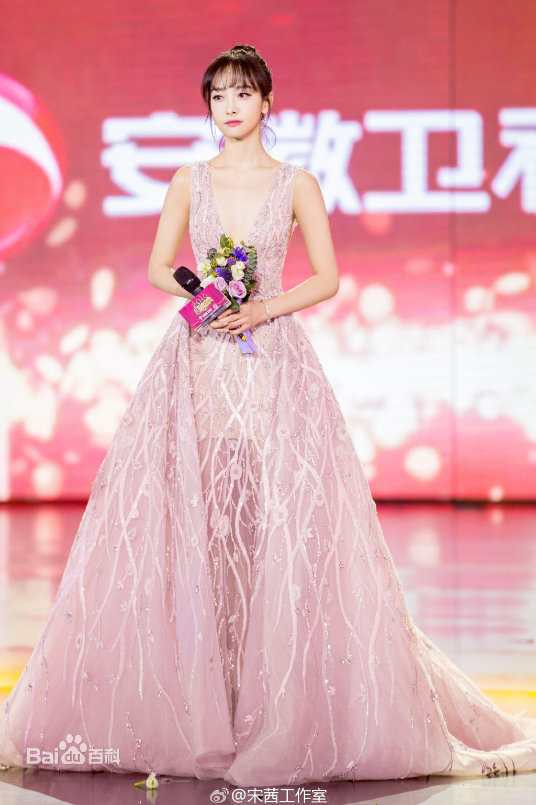
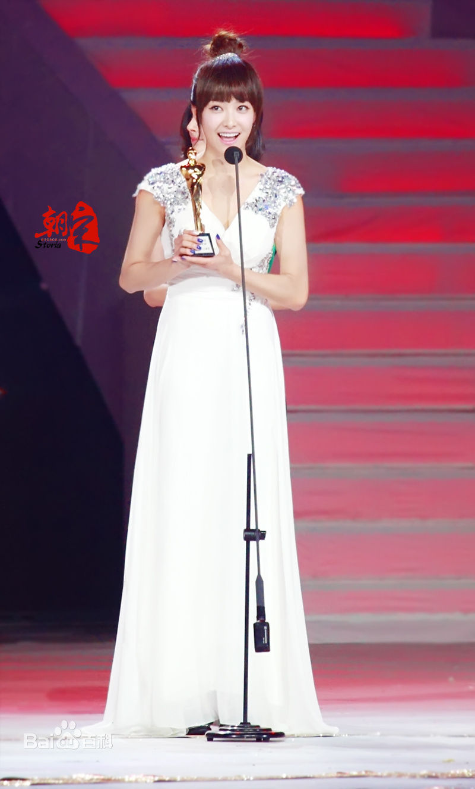

网站首页
代表作品
影视作品
综艺节目
杂志写真
基本信息
社会活动
获奖记录▼
留言建议
获奖记录
电影类奖项
▪ 2016 第8届 澳门国际电影节最佳女配角奖 我最好朋友的婚礼 （提名）
影视类个人奖项
▪ 2017-01-16 微博之夜 年度突破演员 （获奖）
▪ 2017-01-01 国剧盛典 年度最具人气女演员 幻城 （获奖）
▪ 2016-12-03 爱奇艺尖叫之夜 年度最具人气演员 幻城 （获奖）
▪ 2016-04-29 华鼎奖 中国当代题材电视剧最佳女演员 美丽的秘密 （提名）
▪ 2016-04-13 乐视生态之夜 年度最具潜力演员 （获奖）
▪ 2016-02-29 华鼎奖 最佳新锐演员 美丽的秘密 （提名）
▪ 2016-02-15 明星权力榜年度盛典 内地最具人气女演员 （获奖）
▪ 2012-12-31 国剧盛典 年度最佳新人女演员 爱情闯进门 （获奖）
音乐类奖项
▪ 2014 第22届 世界音乐大奖(WMA) 全球最佳女艺人World's Best Female Artist （提名）
▪ 2014 第22届 世界音乐大奖(WMA) 年度最佳艺人World's Best Entertainer of the Year （提名）
▪ 2014 第22届 世界音乐大奖(WMA) 最佳现场表演World's Best Live Act （提名）
舞蹈类奖项
▪ 2007 北京市舞蹈大赛 民族民间舞群舞组一等奖 画聆 （获奖）
▪ 2007 北京市舞蹈大赛 民族民间舞群舞组二等奖 花腰新娘 （获奖）
▪ 2006 第八届桃李杯舞蹈比赛 民族民间舞群舞组一等奖 红珊瑚 （获奖）
综合类奖项
▪ 2016-12-25 移动视频风云盛典 传播影响力人物（获奖）
▪ 2016-11-06 粉丝嘉年华 明星势力榜年度人物 （获奖）
▪ 2016-02-29 聚星之美盛典 全能女神奖 （获奖）
▪ 2015-12-23 搜狐时尚盛典 年度人气女明星 （获奖）
▪ 2015-12-05 尖叫爱奇艺之夜 亚洲人气偶像 （获奖）
▪ 2014-12-08 百度史记 年度十大人气王 （获奖）
▪ 2014-04-13 第十四届音乐风云榜年度盛典 微博票选年度人气王 （获奖）
▪ 2013-12-26 美国电影媒体TC Candler 全球“百大最美脸孔女星” （获奖）
▪ 2013-12-22 百度搜索风云榜 年度十大热搜艺人 （获奖）
▪ 2012-10-13 音乐风云榜 华语女歌手完美五官票选第一 （获奖）
▪ 2012-07-25 第五届偶像运动会 女子击剑冠军 （获奖）
▪ 2011-01-13 搜狐娱乐 全球最美丽50人 （获奖）
▪ 2010-12-29 第十届MBC演艺大赏 最佳人气奖 （获奖）

2016年国剧盛典

2012年国剧盛典
晋ICP备17021305号
晋公网安备41012202000160
太原市平阳路学府街凯通大厦512号 0808-13156946
创意金点子有限公司 版权所有 © 2017-2021